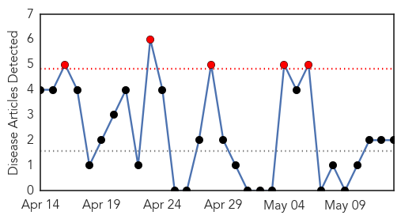

Influenza
30-Day Web Trend
1 alerts, 0 warnings

30-Day Twitter Trend
2 alerts, 0 warnings

Article Locations

Article Confidences
Top Articles:
- 0.947
- Memory code for flu-killing 'assassin' cells cracked in quest for one-shot flu 'jab' for life
- 0.941
- Bird flu outbreak hits Nebraska poultry farm
- 0.898
- H5 Bird Flu Outbreak Reported In Nebraska Farm
- 0.842
- ID expert offers overview of adult immunizations for the internist
- 0.788
- Deadly dog flu detected in Houston area
- 0.753
- Others’ Opinon: More help needed for bird flu losses
- 0.751
- May 13, 2015 Archives
- 0.751
- May 12, 2015 Archives
- 0.702
- First Cases of Bird Flu Confirmed in Nebraska
- 0.679
- USDA, rapped on bird flu, says hundreds deployed
- 0.626
- New test could identify resistant tuberculosis faster
- 0.579
- First Nebraska Cases of Bird Flu Confirmed in Flock
- 0.509
- Plan for bringing new vaccines to the developing world is finally starting to pay off
Top Tweets:
-
No tweets found for May 13, 2015
Pertussis
30-Day Web Trend
5 alerts, 0 warnings

30-Day Twitter Trend
0 alerts, 0 warnings

Article Locations
Article Confidences
Top Articles:
Top Tweets:
-
No tweets found for May 13, 2015